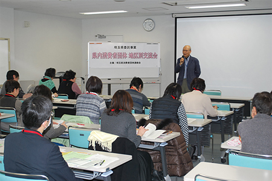

2014年度県内消費者団体地区別交流会（熊谷会場）が１月28日（水）熊谷市で開催され、会場の熊谷市男女共同参画推進センターハートピアには、地域と県域消費者団体７団体と埼玉県から、24人が参加しました。

交流会は、埼玉消団連幹事の滝澤玲子さん（埼玉県生協ネットワーク協議会会長）の司会ですすめられました。
最初に、「いまこそ、地域でつながろう～改正消費者安全法にもとづく見守り」と題して、講師で弁護士の中村弘毅さんにお話しいただきました。
中村さんは、「地域での消費者問題をどう考えるか、消費者教育推進法の施行や昨年の消費者安全法の改正など、いま大転換を迎えている時期の中で、今日は一緒に考えたい」と話し、消費者被害防止は地域社会の重要課題として、消費者トラブルの現状を説明しました。
埼玉県における消費生活相談推移で平成25年度は相談件数が５万件を超えて増加に転じており、少額の被害は上がってこないことから消費生活相談数は氷山の一角で、消費者被害が地域経済に深刻な悪影響となっています。これに対し、地方消費者行政の予算、担当職員は大幅に減少しており、平成20年度からすすめられた地方消費者行政活性化基金で予算、消費生活センターの相談員は増加しましたが、消費者行政担当職員は５年前の平成20年度の数を割っています。
こうした中で昨年６月に改正された消費者安全法について、中村さんは「改正の一番のポイントが“地域連携”」と述べ、行政による消費者啓発・被害防止から地域連携の推進と消費者市民の育成が主眼になっていると話されました。
その上で、地域連携について「理想的だが、現実的にはどういった連携なのか、新たな広い視野での連携が必要」とし、地域ネットワークの構築イメージと改正消費者安全法の地域協議会、高齢者見守りネットワークの構成を中心に話されました。中村さんは、私たちの取り組みとして、 地域の見守りネットワークへの参加、
地域の見守りネットワークへの参加、 消費者市民育成の行政への働きかけ、
消費者市民育成の行政への働きかけ、 地域協議会の設置要望と参加、
地域協議会の設置要望と参加、 消費者行政担当職員の増員と資質向上の４つを課題として挙げました。
消費者行政担当職員の増員と資質向上の４つを課題として挙げました。
| 中村弘毅弁護士 | ＮＰＯさいたま市民後見センター 中田 均さん |
続いて、地域でおこなわれている高齢者のサポート事例として、ＮＰＯ法人さいたま市民後見センターの活動について、同センター理事長の中田 均さんからお話しいただきました。
関連して、埼玉消団連事務局から、行田市での高齢者消費者被害防止の取り組みと県内での見守りネットワークの概要について報告されました。
講演と活動の報告・紹介を受けて後半は、私たちでできる見守りについて、３つのグループで話し合い、交流しました。
＜グループ交流＞
＊県内消費者団体地区別交流会
県内各地域の消費者団体が集まって情報交換し、地域の実情に即した活動を共に考え、消費者活動の活性化につなげていこうと、毎年春に開催されています。
今年度は、昨年の通常国会で成立した改正消費者安全法と地域の見守りネットワークづくりをテーマに、消費者被害をはじめとした消費者の課題と市民の側からの課題解決に向けた連携・協働を考えます。
この企画は、平成26年度埼玉県委託事業として開催されています。
これからの開催予定
■春日部会場
- 日時：
- ２月５日（木）13:30～16:00
- 会場：
- 春日部市市民文化会館 大会議室１
- 春日部市粕壁東二丁目８番61号
- 交通：東武野田線「春日部駅」東口下車・徒歩約13分
お問い合わせ
埼玉県消費者団体連絡会 事務局 電話 ０４８－８４４－８９７１（埼玉県生協連内）